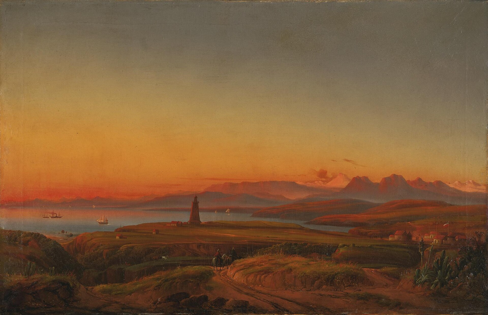

Chapter 21
The Captain’s Report to the Consul
Seen from above, the eight survivors of the Essex now occupy two different worlds. In a Valparaíso hospital, Owen Chase lies on a cot with his jaw bound in linen, unable to close his mouth fully, the bone having knitted badly after months of malnutrition and exposure. Thomas Nickerson, aged fifteen, shares a ward with men twice his age who stare at walls or weep without warning. Charles Ramsdell and the others move between their beds and the harbor, still unable to sleep through a night, still starting at sudden noises. They have been ashore for seventeen days. They have eaten bread, beef, fresh fruit. Their bodies have begun to reclaim themselves from the edge of death, and the reclaiming hurts.
Four blocks away, in a building of whitewashed adobe with a small American flag above its door, Captain George Pollard Jr. Sits at a desk. The United States consul to Valparaíso, William H.D.C. Bryant, has provided paper, ink, a seal. The room smells of sealing wax and the particular dust of coastal Chile. Outside, the afternoon light falls through shutters in horizontal bars. Pollard has not slept more than three hours in succession since his rescue. He is twenty-eight years old. He has commanded a vessel that no longer exists, lost twenty of the men placed under his authority, and steered a course that led, by stages he is only now beginning to articulate, to the drawing of lots and the consumption of his own cousin.
He picks up the pen.
—-
The document he produces will outlive everyone in this room. It will be copied into the consular records, forwarded to the Secretary of State in Washington, entered into the archives of the District Court of Massachusetts when the owners of the Essex file their insurance claim. It will become the foundation upon which all subsequent accounts must build or against which they must argue. What Pollard chooses to include, what he chooses to omit, and what he chooses to phrase with care rather than candor will establish the official shape of the disaster. This is not memory. This is inventory.
He begins with the vessel. Essex was an American whaling ship from Nantucket, Massachusetts, which was launched in 1799. On November 20, 1820, while at sea in the southern Pacific Ocean under the command of Captain George Pollard Jr., the ship was attacked and sunk by a sperm whale. The language is precise, maritime, stripped of the confusion he actually experienced—the whale’s appearance as a white shape underwater, the impossible bulk rising, the sound of the hull splintering that he would later describe privately as like a tree falling in a forest he could not escape. Here it is simply: attacked and sunk by a sperm whale. The passive construction matters. The whale acts. The captain records.
The report continues with the practical aftermath: the crew took to three small whaleboats, the decision to make for the coast of South America rather than the Society Islands, the separation of the boats, the landing on Henderson Island, the subsequent voyage of Pollard’s own boat with four men remaining.
The document notes that the survivors were reduced to the last necessity and that the lots were drawn.
It does not describe Owen Coffin’s face when the black spot was revealed. It does not record whether Pollard himself drew a lot, or whether, as Chase would later claim, the captain was excluded from the drawing by the others’ insistence. It does not mention that Coffin was Pollard’s cousin, that they had grown up on the same island, that Coffin’s mother would read this report or have it read to her and find her son reduced to a passive clause: it fell upon Owen Coffin to die.
What the report does include is navigation. Positions, dates, distances sailed. The document is crowded with numbers because numbers are the currency of maritime law.
Pollard records that they traveled approximately 2, 000 nautical miles from the site of the sinking to their rescue, that they were at sea for eighty-nine days in the whaleboat, that they consumed the bodies of three men. The consumption is noted as fact, not drama.
The report does not explain that the first body—that of Barzillai Ray—was eaten immediately, without ceremony, because the men were still strong enough to feel horror and needed to get it over with. It does not explain that the second death, that of Charles Shorter, was welcomed by the survivors because they were starving again. It does not explain that Owen Coffin submitted to his death with what Pollard would later, in private conversation, call great fortitude and submission, or that Pollard himself had promised to carry Coffin’s last words to his mother and then found himself unable to speak of them for thirty years.
The report is four pages. It takes Pollard six hours to write.
—-
While the captain works at the consulate, Chase undergoes a different procedure. A Chilean surgeon, consulted by the American consul’s staff, examines the first mate’s jaw and pronounces the bone healed but deformed. There will be no operation. The damage is permanent.
Chase, who kept a log through the entire ordeal, who recorded positions and wind directions and the daily ration of bread and water while the bread lasted, now finds himself unable to speak clearly.
He has begun to draft his own account, working from his notes, but the physical act of writing is painful and the physical act of speaking is embarrassing. He is twenty-three years old. He has commanded the whaleboat that reached the Dauphin first, that secured the rescue of all eight survivors.
He has also, by his own later admission, proposed to Pollard that they draw lots before the captain was willing to consider it.
The report Pollard is now filing does not mention this proposal. It does not mention Chase at all except as one of the survivors.
The omission is strategic. Maritime law recognizes a hierarchy of responsibility. The captain is answerable to the owners for the loss of the vessel and the cargo; the mates are answerable to the captain. By concentrating all agency in himself—the decisions made, the course steered, the lots drawn—Pollard is constructing a narrative that protects his subordinates from legal exposure. He is also, perhaps unconsciously, constructing a narrative that protects himself from the full weight of what he experienced. If the report is spare, it is because the spareness is survivable. The details that Chase will include in his own narrative—the precise dimensions of the whale, the sound of the impact, the specific hours of specific deaths—belong to a different genre of document. They belong to testimony rather than report.
The distinction matters for what comes next. The owners of the Essex, Gideon Folger and Paul Macy, will receive Pollard’s report through the consular mail. They will read it in their counting-house on Nantucket, surrounded by the instruments of their trade: the try-pots and cutting spades in the warehouses, the ledgers in which every barrel of oil is recorded against its voyage. For them, the report will function as a statement of loss. The vessel: total loss. The cargo: total loss. The crew: twelve of twenty lost, a percentage that falls within the actuarial range of whaling mortality. The measures taken: extreme but, given the circumstances, defensible. The captain’s conduct: irreproachable, or at least not explicitly reproached.
This is the ledger mentality at work. The disaster is processed into entries. The entries are processed into a balance sheet. The balance sheet will determine whether the owners press for further inquiry, whether they support their captain in subsequent proceedings, whether they invest in another voyage under his command. Pollard understands this. He has sailed as second mate and first mate of the Essex from 1815 to 1819. He has watched Daniel Russell, the previous captain, make his reports and take his decisions and eventually step aside for a younger man. The report he is now writing is not only a record of the past. It is an application for the future.
—-
Evening falls on Valparaíso. The harbor, one of the finest natural ports on the Pacific coast of South America, fills with the lights of anchored vessels: British merchantmen, American whalers, Chilean coastal traders. The Dauphin and the Indian, the two vessels that rescued the survivors, ride at anchor with their own captains now busy with their own reports. Captain Zimri Coffin of the Dauphin has already forwarded his account to the American consul, noting the condition of the men when found, the measures taken for their recovery, the disposal of the whaleboats and their remaining equipment. Captain William Crozier of the Indian has done the same for the three survivors in his charge. These documents will be appended to Pollard’s report, creating a file that grows thicker even as it grows more remote from the experience it describes.

Nickerson, the youngest survivor, has not been asked to contribute. At fifteen, he is legally a minor and professionally a greenhand. His memories—of the whale’s appearance, of the sinking, of the separation from Chase’s boat, of the weeks on Henderson Island eating birds and peppergrass until the food ran out—belong to no official category. He will carry them for sixty years before writing them down.
When he does, the document he produces will contradict Pollard’s report in small particulars and large implications. It will suggest that the decision to sail east was driven by fear of cannibals rather than by navigational calculation, that the lot-drawing was more contested than Pollard admitted, that the captain himself was closer to collapse than the official record allows.
But in April 1821, Nickerson is silent. He is eating. He is trying to sleep. He is waiting for someone to tell him what happens next.
The blank page of the ocean, which the survivors filled with their suffering, is now being overwritten by the blank page of official prose. The distance between what happened and what is recorded is not yet apparent to the men involved. They believe they are making a record. They do not yet understand that they are making a precedent.
—-
Pollard completes the report on the evening of April 9, 1821. He signs it with his full name, his rank, the name of his lost vessel. The consul witnesses the signature and applies the consular seal. The document is now official. It enters the machinery of maritime governance: copied, forwarded, filed, referenced. It will be cited in the insurance proceedings. It will be quoted, selectively, in newspaper accounts. It will be read by Herman Melville thirty years later, along with Chase’s more vivid narrative, and will contribute to the architecture of Moby-Dick—not the plot, which Melville took from Chase, but the structural possibility of a captain who survives his own disaster to tell of it in measured, insufficient words.
What the report does not do is answer the questions that will preoccupy the survivors for the rest of their lives.
Did we choose rightly? Could we have saved more? What did we become, out there, and what remains of what we were?
These questions have no place in maritime law. They belong to a different jurisdiction, one that the survivors will explore in private conversation, in religious reflection, in the slow accumulation of memory that hardens into narrative.
Chase will explore them in his published account, written hastily in 1821 and revised obsessively thereafter. Nickerson will explore them in his manuscript, written in retirement and left unpublished.
Pollard will explore them, it appears, hardly at all—at least not in any document that survives.
He will return to sea. He will command another vessel, the Two Brothers, and will lose that one too, wrecked on the French Frigate Shoals in 1823, with Nickerson and Ramsdell again in his crew.
The pattern of loss will seem, to his contemporaries, like bad luck or bad judgment. To later observers, it will seem like the working-out of a trauma that found no adequate language in 1821 and found none thereafter.
The report is filed. The consul’s office closes for the night. Pollard walks back to the hospital through streets that smell of fish and wood-smoke and the particular damp of a Pacific port.
He has done his duty. The duty has required him to transform his experience into a document that can travel, that can be read by strangers, that can serve as the basis for financial and legal decisions.
He has not lied. He has selected. The selection is itself a kind of survival, a way of continuing to live in the world that requires such documents.
Whether it is also a kind of betrayal—of the dead, of the truth, of his own capacity for feeling—will be determined not by him but by the readers who come after, who will compare his four pages against Chase’s two hundred, against Nickerson’s sixty years of silence, against the accumulating weight of what can be said and what must be left out.
The consul’s office, with its whitewashed walls and shuttered windows, operates as a kind of translation chamber. Bryant himself sits nearby as Pollard writes, occasionally offering guidance on diplomatic protocol—the proper forms of address, the sequence in which events should be presented, the distinction between a captain’s narrative and a sworn deposition. Bryant has served in Valparaíso since 1819; he has processed the paperwork of shipwrecks before, though none so notorious as this. He understands that his role is not to interrogate but to facilitate, to ensure that the document that emerges will satisfy the requirements of distant authorities who will never smell the harbor or see these broken men. His presence exerts a subtle pressure toward coherence, toward the resolution of contradiction, toward the transformation of chaos into sequence.
The specific constraints of maritime law shape Pollard’s choices at every turn. A captain’s report to a consul functions simultaneously as testimony, insurance evidence, and potential defense against charges of negligence or barratry. The language of “necessity” that Pollard employs—reduced to the last necessity—derives from established admiralty precedent, invoking a legal standard that excuses otherwise unthinkable acts when undertaken to preserve life. By framing the cannibalism in these terms, Pollard is not merely describing; he is pleading, though the court before which he pleads is dispersed across time and space, its judges the owners in Nantucket, the insurance underwriters in Boston, the naval officers who may someday review his record. The phrase last necessity appears twice in the four-page document, as if repetition might strengthen its protective power.
The decision to sail east rather than west for the Society Islands represents the most consequential navigational choice of the entire ordeal, and Pollard’s treatment of it reveals both his uncertainty and his retrospective need for justification.
The report states simply that “fears were entertained of falling into the hands of the natives” if they sailed westward, followed by the practical observation that “the winds were favorable for the coast of South America.”
This formulation compresses hours of debate, the conflicting advice of Owen Chase and Matthew Joy, the captain’s own dread of unknown islands against his equally powerful dread of the open ocean.
What the report cannot acknowledge, because maritime law values decision over indecision, is the possibility that Pollard chose wrongly—that the shorter distance to inhabited islands, despite their rumored dangers, might have saved lives that the longer eastern passage consumed. The document asserts the wisdom of the choice after the fact, converting contingency into strategy, doubt into determination.
The physical circumstances of the drafting deserve attention. Pollard writes with a quill that requires frequent dipping, and the rhythm of this action—dip, write, dip again—imposes its own structure on the prose. The consul’s ink is of good quality, imported from England, but the paper is local, slightly coarse, absorbent enough that errors cannot be fully erased.
Pollard crosses out one phrase and writes above it: not we ate the bodies of three men but we were reduced to the last necessity of eating the bodies of three men. The revision adds four words that transform agency into circumstance, active verb into passive construction.
The bodies, in this formulation, are not consumed but submitted to consumption, as if the men themselves had no hand in what occurred. This is the work of legal consciousness, the awareness that every clause may be scrutinized, that the difference between survival and savagery may hang on a grammatical choice.
The silence surrounding Owen Coffin operates at multiple registers. Legally, the report need not identify relationships among crew members; the consular form does not require it. Emotionally, the identification of Coffin as Pollard’s cousin would introduce a dimension of personal grief that the document’s genre cannot accommodate. Strategically, such identification might raise questions about whether Pollard’s authority was compromised by kinship, whether he showed favoritism or failed to show it, whether the drawing of lots was truly fair when one of the lots belonged to family. The report’s silence thus protects multiple vulnerabilities: the captain’s heart, his reputation, the fragile consensus among survivors about what occurred.
Yet this silence also creates a kind of negative space in the document, a palpable absence that readers sense without being able to name it. The cousin becomes merely Owen Coffin, seaman, one name among twenty who were lost, his particular death stripped of its particular horror.
In the hospital, Chase sleeps badly, his jaw propped open, his breath coming in shallow gasps. In another ward, Ramsdell and Lawrence and the others turn in their beds, reaching for oar-handles that are not there, calling out to men who are dead. The report lies in the consul’s strongbox, sealed and dated, waiting for the mail packet that will carry it north. The ocean that nearly killed them all continues to move against the hulls in the harbor, indifferent to what has been written about it, preparing for the next voyage, the next disaster, the next document that will attempt to contain what cannot be contained.
Pollard’s report is filed, creating an official version that now becomes the baseline for all further inquiry, litigation, and legend.